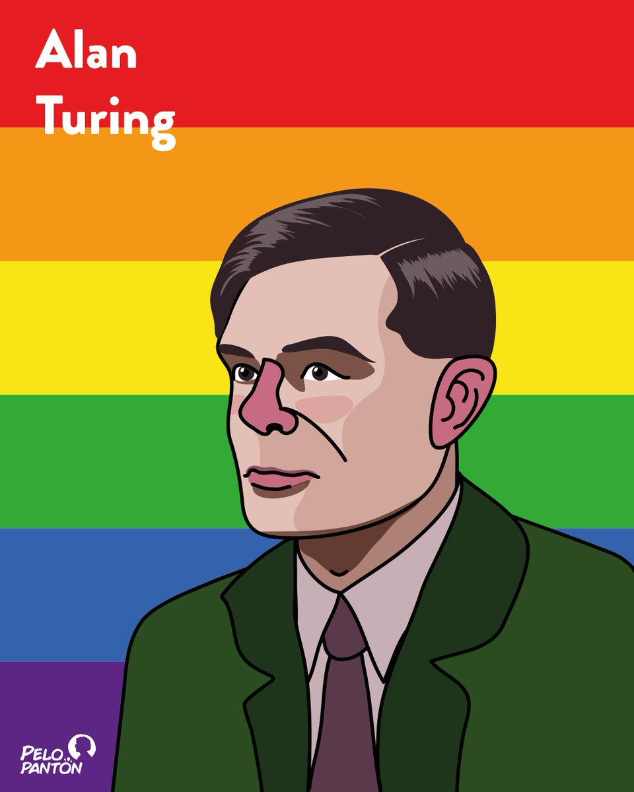

Comentario de Ingeniería, por Camilo Arciniegas Guerrero
Parte 1: Resúmenes
#1 Alan Turing:

Nacido en Reino Unido, Alan Turing, en la segunda guerra mundial fue el encargado de descifrar códigos nazis, pero si en aquellos tiempos no había computadores como los que tenemos hoy en día, ¿cómo hizo eso? Pues precisamente por lo brillante que fue, se le considera incluso hasta hoy en día como el padre de la inteligencia artificial y, más imporante aún, de la informática, pues gracias a él y su trabajo fue que se pudo generar la primera computadora electrónica, es más, gracias a él es que las ciencias de la computación se empezaron a tomar de forma seria incluso creando la teoría de la computación, pues Turing, además con su gran habilidad en la lógica matemática y las matemáticas discretas, fue capaz de aplicar la matemática a la computación teniendo como resultado los computadores que tenemos hoy en día. Lastimosamente, en internet se encuentra mucha información sobre su orientación sexual, pues él era homosexual y en esa época, era ilegal serlo en Reino Unido, por lo que fue condenado a la castración química y dos años después se suicidó envenenándose con cianuro. En los años 2009 y 2013, el Reino Unido se disculpó públicamente por el trato hacia Turing por ser homosexual, pero es triste saber que no fue una disculpa auténtica, sino que fue disculpa después de que Turing haya demostrado que sin importar la orientación sexual de una persona, es capaz de crear algo nuevo para ayudar a la humanidad. Esto último también hizo que le pusieran a un premio, su nombre.
#2 Katherine Johnson:

Como una mujer negra en los años 1900, Katherine Johnson sufrió de una gran discriminación tanto de niña, como en su juventud, como en su adultez, sin embargo, en su carrera en la NASA, sus compañeras y sus superiores se dieron cuenta del talento innato y la habilidad especial de Katherine para hacer cálculos mentalmente, por lo que en momentos críticos, se le hacía un llamado para que ella hiciera los cálculos, los cuales siempre fueron más precisos que cualquier computadora de la época; estos cálculos le permitieron a la NASA enviar a los astronautas estadounidenses al espacio. Desde entonces, se le empezó a conocer como la "ordenadora (o computadora) humana" aunque claramente era mejor que una computadora normal. Su trabajo, más específicamente se enfocaba en hacer los cálculos de trayectoria de los vuelos espaciales y de los diseños de las naves. Esto le permitió a la NASA (Estados Unidos) llegar al espacio antes que los enemigos principales en ese entonces, los rusos. Katherine pudo demostrar que sin importar la raza de una persona, es capaz de hacer cosas extraordinarias, que permitan llegar a la victoria o sencillamente a hacer desarrollar tecnológicamente al mundo entero.
#3 Tim Berners-Lee

Aún vivo, el científico de la computación Tim Berners-Lee, es el invetor y padre de la World Wide Web, o, como es comúnmente conocido, WWW. En 1989, Berners-Lee trabajaba en el laboratorío de física de partículas de Suiza y mientras trabajaba creó el concepto de una red de información global, en donde se podía acceder a distintos sitios web a través de hipervínculos. En 1991 lanzó la primera y con ella, creó los servidores y navegadores web. El objetivo de él fue crear una red intercomunicada de toda la información del mundo y que pudiera estar al alcance de todos con fin de evolucionar con una mayor facilidad, lo cual ha resultado fenomenalmente bien, pues el avance en los útlimos años ha sido superior al avance de miles de años del pasado. Berners-Lee ha ganado diversos premios dentro de los cuales están el Premio Turing y el Premio de Tecnología de la Información. Berners-Lee no sólo quería mejorar el acceso a la información, sino que quería mejorar la educación, lo cual es algo un poco raro para un hombre nacido en el 1955, pero a pesar de esto, es digno de admirar.
Parte 2: Comentario
A pesar de que voy a ir uno por uno, quiero decir, para empezar, que los 3 han sido humanos impresionantes, pues los tres fueron tan ingeniosos que crearon una nueva época, llena de tecnología, por ejemplo, Alan Turing fue (y es) el padre de la computación, Tim Berners es el padre de la internet en sí y Katherine Johnson, aunque no se haya ingeniado una nueva forma de ver al mundo digitalmente, fue una computadora antes de que se crearan, por lo que ella directamente lo que tenía es una talento matemático impresionante, a diferencia de Turing y Berners, quienes solo encontraron una nueva forma para todo.
Otra cosa que hay en común en estas historias es que Turing y Johnson fueron personas discriminadas, el uno por ser homosexual hasta el punto de provocar su suicidio y la otra por ser muy y afroamericana, y aunque obviamente en los años 1900 todo tipo de discriminación fue muy común, nada justifica lo que le hicieron a estos 2. Peor aún es que, cuando se dieron cuenta ya sea del potencial que tenían o de los resultados que dieron, presentaron disculpas a ambos, lastimosamente en el caso de Turing fue ya muy tarde. Obviamente la opinión que todos, o por lo menos la mayoría tendría es que todo tipo de discriminación está mal y puedo hacer una comparación entre el caso de estos dos y un padre e hijo, pues cuando un apdre apoya a su hijo en cumplir lo que quiera, lo logre o no, el hijo estará contento con el apoyo de su padre, del otro lado, si el padre no apoya a su hijo y todo el tiempo está criticando lo que hace, pero después decide perdonarlo, perdonarse y empezar a apoyarlo después de que ya haya conseguido algo, todo ese apoyo y esas disculpas habrán sido en vano, pues el hijo ya consiguió todo lo que quería sin necesidad de un padre que lo apoyara y empezar a apoyarlo desde ese momento, podría considerarse como interés, pues estaría buscando algo en el éxito de alguien más. Del punto de vista de la ingeniería, esta gente fue demasiado imporante debido a lo que consiguieron, entiendo el hecho de que posiblemente después de ellos, alguien más lo habría podido conseguir, pero ¿cuánto tiempo tendría que haber pasado para que otras personas lo hubieran conseguido? Posiblemente más del que la humanidad habría estado dispuesta a esperar, así que esta gente marcó un antes y un después...
Turing: Computación, pues todo a día de hoy incluye a la computación hasta cierto punto. Desde la informática, hasta la automatización de máquinas, de modo que nosotros podamos dedicarnos a avanzar más cosas sin perder el tiempo en procesos que se pueden automatizar.
Johnson: Aunque no haya tenido inventos directamente de ella, fue la que permitió ir al espacio, generar nueva tecnología a partir de sus cálculos, pues sin ella, no se habría podido nada de eso ya que no existían computadoras en la época y los que existían estaban recién en invención y perfeccionamiento.
Berners-Lee: En mi opinión es el más imporante de los 3, porque, aunque sin los 2 anteriores no haya sido posible lo que él consiguió, él es el que saca el máximo provecho y rendimiento a los computadores, ahora haciéndolos interconectados, ya que si no lo hubiera inventado aún seguiríamos (como humanidad) estando en un estado de baja evolución.